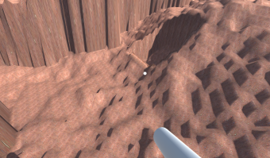

Leikjaforritun - Verkefni 5
Í þessu verkefni vildum við aðallega skoða og prófa multiplayer getu
unity og gekk það vel þóg að það er frekar basic, gamalt og það að þeir vilja að fólk
noti það ekki fyrir ný project frá og með version 2018.3x. Unity eru samt að vinna í
því að gera glæ nýtt kerfi sem við vildum mjög mikið fá að fikta með en því miður er ekki
búist við grunninum á því fyrren einhverntíman 2019. Síðan vildum við prófa að gera destructible
terrain. Þetta var ekki það einfaldasta sem við höfum gert þar sem Unity hefur ekkert byggt inn
fyrir það en fengum það til að virka þóg að það breytist skringilega eftir stærð og gerð mapsins
vegna hversu lélega Unity reiknar út stærðir mappa yfir í alvöru mælieiningar
Höfundar:
Helgi Steinarr Júlíusson og Guðmundur Óli Halldórsson
Engu tutorial var fylgt en síður sem við
notuðumst við voru meðal annars:
StackOverflow
Unity Answers
Unity Forums
Unity Docs
Næstu skref:
Næstu skref væru að fikta með particle systemið fyrir t.d. spreningarnar
og svo gera eitthvað almennilegt HUD og menu screens sem mundu skipta út default Unet HUDinu.
síðan langaði okkur að gera dedicated servers sem mundu þá í raun vera bara "headless" client
sem sæji um að hosta leiknum svo það er ekki ekki bara einn playerinn sem sér um það.
Svo auðvitað gera einhver almennilega gamemodes svo það er eitthvað objective ekki bara endless deathmatch.